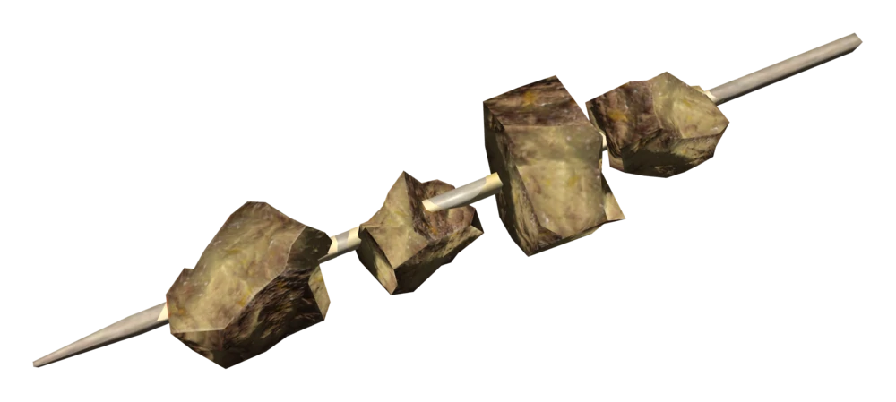

--- Mirelurk Jerky ---
A shishkebab, made from mirelurk meat. Increases Perception and Poison Resistance.
Anti-freeze bottle x1
Mirelurk meat x2
Tarberry x2
- Cut up the mirelurk meat into bite-sized chunks.
- Place the mirelurk chunks and the tarberries inside of the anti-freeze bottle.
- Shake well to squash the berries and marinate the chunks.
- Hold the anti-freeze bottle over a heat source to cook the meat.
- Caution:Be careful not to accidentally melt the bottle or you will end up with acid and plastic instead!
- Remove meat once cooked, and skewer like a shishkebab before eating with style.
